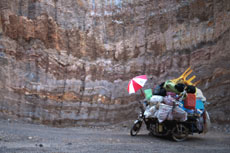

|
MAN AND GRAVITY
Jakrawal Nilthamrong | Thailand 2009 | 11 Min.
Material: HDV
Format: Beta SP
Originalsprache: o. Dialoge
Drehbuch: Jakrawal Nilthamrong
Kamera: Likkhasit Prachkul
Ton: Shubhajog Jumsai Na Ayuhaya
Schnitt: Jakrawal Nilthamrong
Mit Sommhai Angkew
Produktion: Jakrawal Nilthamrong
Vertrieb: Mit Out Sound Films
Gegen die Schwerkraft. Ein Mann versucht, ein mit Müll beladenes Moped einen Berg hinaufzuschieben. Ein aussagekräftiges Unterfangen: vollbepackt mit den Lasten der Zivilisation kommen wir nur mühsam voran. Nilthamrong spielt mit seinem Film auf eine Aussage des thailändischen Mönch Buddhadasa Bhikkhu an, der die Schwerkraft mit dem Schicksal verglich, das unsere Welt auf ähnliche Weise regiert wie die Erdanziehungskraft.
Jakrawal Nilthamrong, geb. 1977 in Lopburi, Thailand. Kunst- und Grafikstudium in Washington und New York. 2006 Abschluss des Kunststudiums in Chicago. 2008 war er Teilnehmer des Berlinale Talent Campus. Er lebt und arbeitet in Amsterdam.
Filme (Auswahl): Patterns of Transcendence 2006 | A Voyage of Foreteller 2007 | Are you rolling 2008 | Orchestra 2008
| Man and Gravity 2009
zurück
|